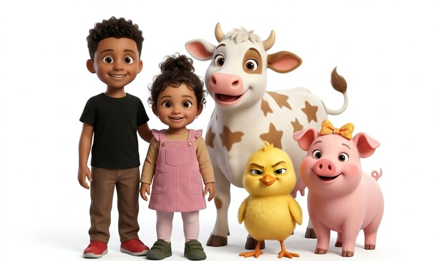

Canciones infantiles para cantar en familia
Corral de Estrellas es un canal de canciones infantiles originales en español para niños de 2 a 6 años. En cada canción, Nico, Lia y sus amigos del corral viven una pequeña historia: aparece un problema sencillo, lo intentan y lo resuelven juntos. Y, de paso, aprendemos algo: colores, números, emociones o buenos hábitos.

Nuestros amigos del corral
- Nico: curioso y valiente.
- Lia: cariñosa y lista.
- Estrellita la vaca: tranquila y sabia.
- Pipo el pollito: travieso.
- Chispa la cerdita: presumida.
- Miau el gatito: dormilón.
Dónde encontrarnos
Publicamos nuestras canciones y fragmentos cortos en YouTube, Instagram y TikTok con el nombre Corral de Estrellas (en Instagram, @corraldeestrellas).
Cómo hacemos las canciones
Las letras, la música y las animaciones se crean con ayuda de herramientas de inteligencia artificial, y una persona revisa cada vídeo antes de publicarlo. Todo el contenido está pensado para ser apto para niños.
La aplicación Corral de Estrellas
"Corral de Estrellas" es también una pequeña aplicación de uso privado que el propio canal utiliza para publicar sus vídeos en sus propias cuentas (por ejemplo, en TikTok). No la usa nadie más, no tiene usuarios externos y no recoge datos del público. Más detalles en las condiciones de servicio y la política de privacidad.